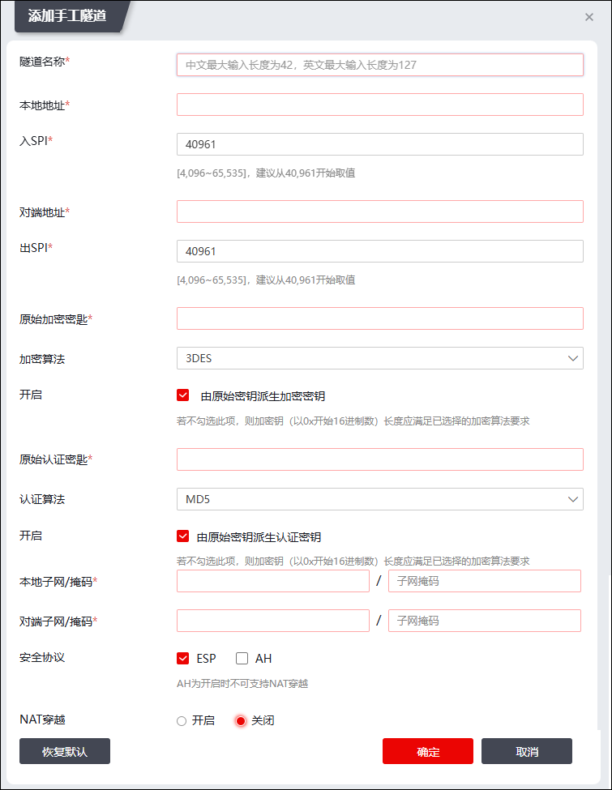

IPSec的基础是安全联盟（SA），它是两个通信实体经协商建立起来的一种协定。SA可以采用前面所述的密钥交换的动态方式产生，也可以通过用户手工配置的方式建立。手工隧道就是通过手工设置IPSec SA而建立的隧道。
手工隧道的优点：
1）没有IKE协商的过程，开销小，也更简单。
2）不需要启用DPD来实现手工隧道的保活。
手工隧道的缺点：
1）网络管理员需要为每条隧道做详细的配置，且需要两端所在网络的管理员协作才能完成。
2）加密密钥容易泄露，安全性不高。
要使NGFW能与其他网关设备成功建立IPSec VPN隧道，NGFW需先执行如下步骤：
l开放用于物理接口所属区域的IPSecVPN服务，请参见 服务管理。
| 步骤1 | 选择 。 |
| 步骤2 | 添加手工隧道。 |
1）点击“添加”，弹出“添加手工隧道”窗口，如下图所示。

在设置手工隧道时，各项参数的具体说明如下表所示。
参数 |
说明 |
|---|---|
隧道名称 |
必填项，设置手工隧道的名称。 隧道名称最多不能超过127个字符，并且不能包含除“-”或“_”之外的特殊字符。 |
本地地址 |
必填项，配置手工隧道本端的IP地址。 |
入SPI |
必填项，配置进入端的安全参数索引（Security Parameter Index，SPI），从而标识IP报文所对应的安全关联。该参数由一个32位二进制数字组成。取值范围：4096-65535，建议从40961开始取值，因为4096-40960范围内的值通常会在自动建立隧道时被使用。 |
对端地址 |
必填项。配置手工隧道对端的IP地址。 |
出SPI |
必填项，配置出端的安全参数索引（Security Parameter Index，SPI），用来标识IP报文所对应的安全关联。它由一个32位二进制数字组成。取值范围：4096-65535，建议从40961开始取值，因为4096-40960范围内的值通常会在自动建立隧道时被使用。 |
原始加密密钥 |
必填项，配置用于加密的原始密钥，需要手工隧道两端填写一致，且它的填写格式受参数“由原始密钥派生加密密钥”的影响。 1）如果勾选了“由原始密钥派生加密密钥”，则“加密密钥”可填写长度在128位以内的字符串，可包括大小写英文字母及数字。 2）如果没有勾选“由原始密钥派生加密密钥”，则“加密密钥”必须填写十六进制数，长度与参数“加密算法”中所选算法的长度保持一致。 |
加密算法 |
用于生成加密密钥的算法，需要与手工隧道对端的填写一致。 可选项：DES、3DES、AES128、AES192、AES256、NULL。 |
由原始密钥派生加密密钥 |
设置是否根据上面所选择的加密算法使用原始加密密钥生成加密密钥。 |
原始认证密钥 |
必填项，填写用于认证的密钥，需要与手工隧道对端的填写一致，且它的格式受参数“由原始密钥派生认证密钥”的影响。 1）如果勾选“由原始密钥派生认证密钥”，则“认证密钥”可填写长度在128位以内的字符串，内容可以包括大小写英文字母及数字。 2）如果没有勾选“由原始密钥派生认证密钥”，则“认证密钥”必须填写十六进制数，长度需要与参数“校验算法”中所选算法的长度保持一致。 |
认证算法 |
配置用于生成认证密钥的算法，需要手工隧道两端填写一致。 可选项：MD5，SHA-1。 |
由原始密钥派生认证密钥 |
设置是否根据上面所选择的校验算法使用原始认证密钥生成认证密钥。 |
本地子网/掩码 |
必填项，配置手工隧道保护的本地子网IP地址/掩码。 说明： 1）建立IPv4手工隧道，本地子网格式为：x.x.x.x/(0-32)；建立IPv6手工隧道，格式为 x:x:x:x:x:x:x:x/(0-128)。 2）本地子网与对方子网的数据报文通信时，通过该手工隧道对数据报文进行保护。 |
对方子网/掩码 |
必填项，配置手工隧道保护的对端网关的子网IP地址/掩码。 说明： 1）建立IPv4手工隧道，格式：x.x.x.x/(0-32)；建立IPv6手工隧道，格式x:x:x:x:x:x:x:x/(0-128)。 2）本地子网与对方子网的数据报文通信时，通过该手工隧道对数据报文进行保护。 |
安全协议 |
选择IP数据包的保护方式，可选项：ESP、AH。 说明： 1）“ESP”和“AH”至少选中一项。 2）使用“AH”时不支持NAT穿越。 |
NAT穿越 |
设置是否支持NAT穿越。如果手工隧道采用AH安全协议，不支持NAT穿越。 |
2）（可选）点击【恢复默认】按钮，配置的参数恢复系统出厂配置。点击【确定】按钮完成IPSec手工隧道的添加。